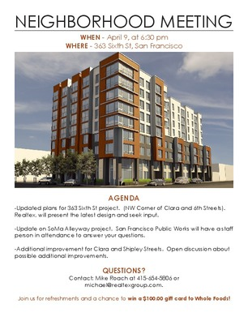

SFBARF are people who believe SF's housing crisis can be mitigated by increasing the housing supply. We organize renters to testify in favor of new building projects at neighborhood meetings and hearings.
Our mailing list is on Google Groups so you can read
the archives.
The email traffic is heavy on the discuss
list.
Sat, April 18, 2pm – 5pm
The Berkeley Neighborhoods Council and Berkeley Citizens Action are holding a workshop on housing issues and coalition building at 2 p.m. April 18 at 2133 University Ave. Scheduled speakers include Councilman Jesse Arreguin and preservationist Steve Finacom.
Read the article here
April 16th @ 6:00 pm - 8:00 pm
Everyone is invited to mingle with members and learn more about the San Francisco Housing Action Coaltion.
Wed, April 15, 7pm – 8pm
The city of Berkeley's 2012 Downtown Area Plan requires that new consctruction over 75 feet provide "significant community benefits." This includes but is not limited to affordable housing, employment opportunies, and enviromentally sound design. This meeting is an opportunity the public to share their views on what this means.
Planning Commission. Oakland City Hall. Hearing Room 1, 6:00 pm
This session will solicit public comment on the needed scope of the Enviromental Impact Report for the Oak Knoll mixed use project.
Oakland City Hall. Hearing Room 1, 6:00 pm
The City of Oakland has determined that the Oak Knoll Mixed Use Community Plan Project needs an SEIR(Supplemental Environmental Impact Report). Come help determine the scope of the needed study.
363 Sixth Street is having a community meeting on the 9th. See here for details
{kind=link}